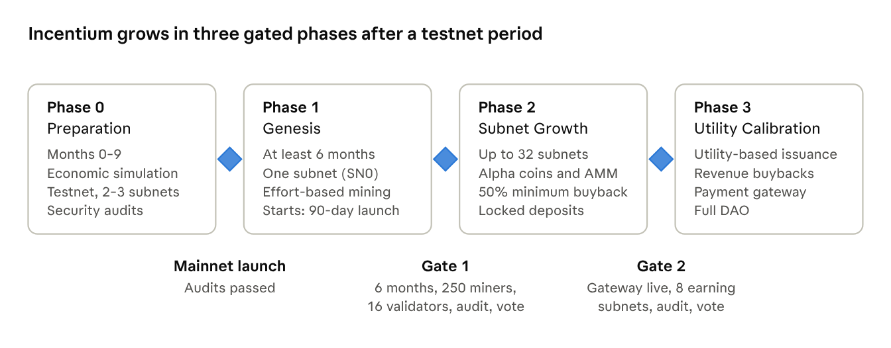

Incentium Whitepaper
Contents
- Abstract
- 1. Introduction and motivation
- 2. Design principles
- 3. System architecture
- 4. Tokenomics: the ICT coin
- 5. Phase 1 – Genesis
- 6. Phase 2 – Subnet Growth
- 7. Phase 3 – Utility Calibration
- 8. Consensus and verification
- 9. Security and attack vectors
- 10. Governance
- 11. Implementation and roadmap
- 12. Implementation status
- 13. Risks, regulation and disclaimer
- Appendix A: Protocol modules
- Appendix B: Glossary
Abstract#
Incentium (incentium.org) is an open, decentralized network in which machine intelligence is produced, verified and rewarded on a dedicated blockchain. The network's native coin is ICT. The protocol builds on the ideas behind Bittensor but addresses three weaknesses: scoring that cannot be audited, work that cannot be verified, and issuance that is not tied to real demand.
Incentium launches in three phases. In Phase 1 (Genesis) there is a single subnet with one standardized task, and rewards are paid for verified work. Its first 90 days are a launch period with lighter participation rules, and three quarters of the rewards from that period are locked and released between day 150 and day 690. In Phase 2 (Subnet Growth) new subnets can be opened against a locked deposit, and each subnet gets its own Alpha coin. At least 50% of the ICT issued to each subnet is automatically used to buy back that subnet's Alpha coin. In Phase 3 (Utility Calibration) issuance is allocated by measurable utility — locked capital, burned fees and user revenue — with safeguards against manipulation.
The goal is a network where rewards follow real value, and where every rule is enforced by the protocol rather than by trust in individual participants.
1. Introduction and motivation#
Artificial intelligence today is produced mainly by a handful of companies that control data, compute and distribution. A decentralized market for machine intelligence can open production to anyone with compute or expertise, and let the market — not a central party — decide what has value.
Bittensor has shown that the model works in practice: miners deliver AI work, validators score it, and a blockchain distributes rewards. Its experience also points to weaknesses that Incentium sets out to fix:
- Scoring without audit. Validators can copy each other's weights or judge poorly without consequence.
- Work without proof. A validator can rarely know that a miner actually ran the correct model.
- Overfitting. Fixed benchmarks get memorized, and miners optimize for the test rather than for real quality.
- Issuance without demand. Allocation is driven by staking and speculation, not by whether anyone pays for the service.
- Concentrated power. A few validators control a large share of the weight.
Incentium keeps what works — subnets, a clear division of roles and market-based allocation — and adds verification, auditing and a direct link between user revenue and issuance.
2. Design principles#
- The protocol enforces; no one has to trust. Buybacks, allocation and penalties are executed automatically by on-chain code.
- Rewards for verified work only. What cannot be checked is not rewarded.
- Manipulation must cost more than it pays. Every metric that drives issuance requires locked capital or paid fees.
- Value follows demand. Over time, user revenue — not newly minted coins — should support the price of subnet Alpha coins.
- Complexity is added gradually. New mechanisms are switched on when the network has shown it can handle them, not by the calendar.
- No hidden allocations. No investor or team allocation; all ICT is issued by the protocol, apart from a disclosed 100 ICT genesis allocation to the launch operator, counted in the cap. The development fund is financed by a fixed share of issuance, and the 90-day launch period and its reward lock are disclosed in full (Section 5.1).
3. System architecture#
Incentium consists of five layers, from the users who pay for AI services down to the chain that settles rewards. The verification layer is what sets Incentium apart: no reward reaches the chain without passing through it.

Requests flow down from users to subnets; results, scores and proofs flow down to the chain, which settles rewards and buybacks.
Roles:
- Miners perform AI work and are rewarded for verified output.
- Validators evaluate miners, commit weights and are audited themselves.
- Delegators stake ICT with validators and in subnet pools, and share in rewards.
- Subnet owners define a subnet's task and scoring, and lock a deposit.
Networking: Nodes communicate over libp2p and QUIC. Every message is signed with the sender's hot key, request limits scale with stake, and miners can sit behind relay nodes for DDoS protection.
Developer tools: Python and Rust SDKs, a CLI, a wallet with hardware-wallet support, a subnet template with a standard evaluation harness, a block explorer and an indexer. The chain is EVM-compatible (Frontier) from day one, with a bridge to other ecosystems.
4. Tokenomics: the ICT coin#
ICT has a fixed maximum supply of 21,000,000 and is issued only through block rewards. There is no investor allocation and no team allocation. The only genesis allocation is 100 ICT to the launch operator for transaction fees and initial stake, counted against the cap. Three quarters of the rewards earned in the 90-day launch period are locked and released between day 150 and day 690 (Section 5.1). All figures below are proposed starting values to be tested in simulation before launch.
| Parameter | Proposed value |
|---|---|
| Maximum supply | 21,000,000 ICT |
| Block time | 12 seconds (7,200 blocks per day) |
| Initial block reward | 1 ICT per block (7,200 ICT per day) |
| Halving | When half of the remaining supply has been issued (about every 4 years) |
| Development fund | 10% of issuance, governed by on-chain vote |
| Registration fee | Burned in full |
| Pool trading fee | 0.5%, half of which is burned |
Halving is triggered by the amount issued, not by block height, so the schedule holds even when part of the issuance is burned or not distributed.
Uses of ICT:
- Staking with validators and in subnet pools, and buying and selling Alpha tokens in the marketplace.
- Deposits for opening subnets.
- Payment for AI services through the payment gateway.
- Access: ICT locked for access in the holder's own wallet gives a share of the public gateway's capacity, pro rata to the share of all ICT locked for access. Locked ICT cannot be moved during a 7-day unbonding period, so the same tokens cannot grant access twice. A small free tier with a bot check stays open, so anyone can try the network without buying ICT. The public demo opens when Tier 1 (Qwen3.5-9B on GPU) is live, before the launch period ends; access tiers open once ICT can be traded. Gateway traffic does not count towards miner rewards at first, so a gateway operator cannot pay its own miners with fake traffic.
- Trading on EVM chains: the Incentium chain is EVM-compatible, so MetaMask works on it directly, and ICT moves to Base as an ERC-20 through a Hyperlane Warp Route that the project deploys and runs itself. Native ICT is locked while the same amount exists on Base, so the supply cap is unchanged. The bridge opens around the end of the launch period with transfer caps, a pause switch, continuous supply monitoring and an external audit; its validators start with the project, which is disclosed, and move to independent operators over time.
- Voting rights in governance.
Burning: Registration fees, part of the trading fees and part of slashed stake are burned. As usage grows, burning can eventually offset new issuance.
5. Phase 1 – Genesis#
Phase 1 has one standardized task in a single subnet (SN0), and rewards follow verified effort. The phase lasts at least 6 months and ends only when the transition criteria are met.
The task: Miners run a fixed, open language model and answer tasks from validators. Tasks come from three sources, in this order: paid jobs from the gateway; an open public-goods queue that fills spare capacity, for example structuring and translating public texts, synthetic training data for small models and embeddings of public archives, with results published openly; and hidden control tasks with known answers that cannot be told apart from the others. Issuance therefore pays for useful output rather than for work done only to prove effort. The model and its version are set at launch and can only be changed by governance vote.
Effort is measured in verified work units:
where T is the number of tokens served and accepted, Q is a quality factor between 0 and 1, and A is availability during the period. A miner receives a share of the miner reward equal to its share of the sum of W.
Verification: Validators check a randomly chosen share of tasks (1–5%). Instead of generating the answer again, the validator feeds the prompt and the miner's answer through the reference model in one pass (prefill) and compares the probability distributions (logits) at every token within a tolerance, since hardware does not produce bit-identical results. Prefill is many times cheaper than generation, so a validator needs only a small fraction of the miners' capacity. Checks run after the answer is delivered and never slow down users. Deviations beyond the tolerance are slashed.
Allocation of issuance in Phase 1:
| Recipient | Share |
|---|---|
| Miners | 60% |
| Validators and their delegators | 30% |
| Development fund | 10% |
Sybil protection: Registration costs a fee that is burned, and each key is capped in how many work units it can be credited per epoch.
Validators: During the 90-day launch period, the launch operator registers and runs the first validators and miners (Section 5.1). After that, validators are run by the core contributors and by any independent operator that registers and stakes. This centralization is temporary and ends at the transition to Phase 2.
Task tiers: To keep SN0 open to ordinary hardware, the task is offered in tiers by model size. All tiers use the Qwen3.5 model family (Apache 2.0): Tier 0 is Qwen3.5-4B, 4-bit quantized, which runs on an ordinary PC with 16 GB of memory or a CPU server without a GPU and is the only tier during the launch period; Tier 1 is Qwen3.5-9B, 4-bit quantized, which runs on a gaming PC or an Apple Silicon Mac; Tier 2 is Qwen3.5-27B on a single data-center GPU; Tier 3 is Qwen3.5-122B-A10B on multi-GPU servers. Tier 0 moves from the 2B to the 4B model because the 4B scores far higher in independent tests (27 against 16 on the Artificial Analysis index) and still runs on an ordinary PC. One family keeps tokenizer and output format identical across tiers, which simplifies spot checks. Each tier has a weight G, and a miner's work units become W × G. G is set from the measured cost per token on each tier (hardware, power and what the machine could earn elsewhere) plus a premium for larger tiers decided by governance, so running a larger, more useful model pays somewhat more per unit of cost; governance recalibrates G every quarter within a limited step. Tasks are assigned at random in proportion to each miner's measured capacity, so a faster machine earns more within its tier, and two machines with equal capacity earn the same. Each miner declares its tier, and validators spot-check it against the model of that tier, so a miner cannot claim a larger model than it runs. A tier opens only when at least three validators can check it. New tiers are added by governance with a transition window; Tier 1 is enabled shortly before the launch period ends.
Pool mining: The protocol supports pools natively, so that anyone can mine without running a validator-facing node of their own:
- A pool registers one key in SN0 and accepts any number of sub-workers.
- Each sub-worker signs a receipt for every piece of work it delivers.
- Validators verify the pool's output with spot checks and can trace a failed check to the sub-worker that produced it.
- The pool pays out ICT through an on-chain payout module, pro rata to verified work units. The pool fee is public, and anyone can check the distribution.
- Anyone may operate a pool; the reference pool published with the open-source software has no special rights.
Sub-workers always mine with their own key and wallet. A participant who rents a GPU from a third-party provider and runs the miner on it is mining in their own name; the protocol does not offer or arrange shares in other people's mining.
Paid work: Jobs that users pay for through the gateway (specification, Section 13) are served by SN0 miners, checked the same way and counted in W like any other task. The protocol, not the gateway or the miner, assigns every task: it goes to a miner drawn at random among the eligible miners of its tier, weighted by capacity, using a public random beacon that anyone can check. Payments are pooled per epoch: the proposed 70% for miners is paid pro rata to W, exactly like issuance, 10% goes to validators by consensus weight, and 20% buys ICT on the market and burns it. The open public-goods queue fills whatever capacity paid jobs leave. Equal capacity, quality and uptime therefore earn equal ICT, from issuance and payments alike, whichever jobs a machine happened to get; within a single epoch the draw causes small differences that even out within days. Paying for fake jobs spreads the payment over all miners and burns a fifth of it, so it cannot pay off. Work that can wait, such as classification, extraction, short summaries, embeddings and image descriptions, is split into pieces of one to two minutes and sent to ordinary PCs, mostly through pools; real-time chat goes to Tier 1 and above. Tasks for open tiers carry no sensitive data, because miners see what they process.
5.1 Launch period (first 90 days)#
The first 90 days after genesis (18 November 2026) are a launch period designed to get the service running quickly. The participation rules meant for a mature, open network — registration fees, minimum validator stake and the per-key work cap — take effect after 90 days, so they do not hold back the start. In return, only a quarter of the ICT paid out for work done in the launch period is paid at once; the other three quarters are locked and released gradually.
| Rule | Launch period (first 90 days) | From day 90 |
|---|---|---|
| Registration of miners and validators | By the launch operator, who builds up SN0's first capacity; no fee | Open to everyone, with the normal fee |
| Validator minimum stake | None | 1,000 ICT |
| Genesis allocation | 100 ICT to the launch operator for fees and first stake, counted in the 21,000,000 cap | – |
| Rewards | 25% paid at once; 75% locked in an on-chain launch vault | Paid directly |
| End | Automatic after 648,000 blocks; can end earlier, never be extended | – |
Lock on launch-period rewards. A quarter of each reward for launch-period work is paid at once; the other three quarters are held in the launch vault. Counted from day 90 they stay fully locked for 2 months; the first 10% is released on day 150, then 10% every 2 months, so everything is released on day 690, 20 months after day 90. The runtime enforces the schedule; nobody can release the vault faster.
Amounts. 648,000 ICT are issued in the launch period. Miners and validators earn about 583,200 ICT: about 145,800 are paid during the period and about 437,400 (2.1% of the maximum supply) go into the launch vault. The other 64,800 ICT go to the on-chain development fund, which only governance can spend. The launch operator account and all hotkey addresses are published at launch, so anyone can follow the vault.
At the end of the launch period. In the block where the launch period ends, the runtime itself — not a person — carries out three disclosed steps: it removes the sudo key, so that from then on every change goes through on-chain governance; it creates and approves two bounties from the development fund, 25,000 ICT for marketing and up to 50,000 ICT for listing ICT on a recognised exchange; and it appoints their curator. The fund holds about 64,800 ICT at day 90, so the marketing bounty is funded at once and the listing bounty when the fund has grown enough, around day 104. The code that does this is public before genesis.
How the bounties are run. The curator is at first the launch operator, through a 2-of-3 multisig account whose keys are stored apart. The curator splits each bounty into child bounties — for example a brief for a video or a series of posts — and awards each one to the creator's or provider's address after the result is measured, publishing the measurement. Every award is public on chain and waits a few days before it can be claimed, during which governance can stop it; governance can also replace the curator at any time. A curator can never pay out more than the bounty holds, and what is left when a bounty closes returns to the fund. Paid content must be marked as advertising. The aim is to hand curation to independent curators over time.
Criteria for moving to Phase 2 (all must be met):
- At least 6 months since genesis.
- At least 250 active miners and 16 independent validators.
- No critical bugs or chain halts in the last 60 days.
- A completed external security audit of the Phase 2 modules.
- An approved governance vote.
6. Phase 2 – Subnet Growth#
In Phase 2 anyone can open a new subnet against a locked ICT deposit. Each subnet gets its own Alpha coin, and at least 50% of the ICT issued to the subnet automatically goes to buying it back.
6.1 Deposit and registration#
- The deposit is locked, not paid. On deregistration 90% is returned and 10% is burned.
- The price is dynamic: it doubles with each new registration and decays linearly back toward a floor of 1,000 ICT over 14 days.
- The number of subnets is capped at 32 at first. The cap can be raised by governance vote.
- New subnets are protected from deregistration for 30 days. After that, the subnet with the lowest measured utility can be replaced once the cap is reached.
6.2 Alpha tokens#
Every subnet has its own token: Subnet 1 issues Alpha1, Subnet 2 issues Alpha2, and so on. Each Alpha token has fixed tokenomics written into the chain's code, which the subnet owner cannot change:
- A maximum supply of 21,000,000 per Alpha token.
- Its own issuance schedule of up to 7,200 Alpha per day, halving like ICT.
- Price-aware injection: each block, new Alpha enters the subnet's pool only up to the amount that block's buyback absorbs at the current price. Scheduled Alpha that is not injected remains available later, so the supply cap is never exceeded. In simulation, a fixed injection left stakers with 0.68 ICT per ICT staked after two years; the price-aware rule gave 1.46.
Alpha tokens are transferable and trade against ICT in each subnet's canonical pool, a constant-product AMM (x · y = k). Holding Alpha and staking it are different: only Alpha staked in the subnet earns a share of the buyback, while Alpha that is only held or traded earns nothing.
6.3 Allocation of issuance#
Issuance is split between subnets according to each subnet's locked value L: the geometric mean of the pool's ICT reserve and the Alpha token's market value, √(ICT reserve × Alpha price × Alpha supply). Only protocol-owned liquidity and staked positions count; deposits by third-party liquidity providers do not. L is averaged over 90 days, which in simulation cut the gain from pump attacks to around break-even. Within each subnet, its share is divided as follows:
| Recipient | Share of the subnet's ICT | Form |
|---|---|---|
| Alpha buyback | 50% (minimum) | Automatic purchase in the pool |
| Miners | 22.5% | ICT, according to consensus |
| Validators and delegators | 20% | ICT, according to consensus |
| Subnet owner | 7.5% | ICT, vested over 6 months |
6.4 The buyback mechanism#
The buyback is enforced by the protocol, not by the subnet owner:
- Each block, the subnet's buyback amount is calculated.
- The amount buys Alpha in the pool within the same block. Small purchases every block make front-running impractical.
- Half of the Alpha bought back is burned.
- The other half is distributed to those who have Alpha staked in the subnet.
Limitation: A buyback funded by issuance is a subsidy, not revenue. From Phase 3 onward, buybacks are increasingly funded by user payments (see Section 7).
6.5 The Alpha marketplace#
A marketplace lets anyone swap any Alpha token against ICT, and one Alpha token for another. It is a front end and router over the canonical pools, not a separate exchange:
- One canonical pool per subnet. AlphaN trades against ICT only in the protocol's own pool for subnet N; issuance metrics read only these pools.
- Cross-Alpha swaps go through ICT. A swap from Alpha1 to Alpha2 is two swaps, Alpha1 to ICT and ICT to Alpha2, and pays the 0.5% fee on both legs.
- Third-party liquidity is welcome but does not count. Outside liquidity providers may add to the pools and earn the unburned half of the fees. Their deposits make prices steadier, but they are excluded from L, so parked liquidity cannot raise a subnet's share of issuance.
- Staking stays separate from trading. Only staked Alpha receives buyback distributions.
In simulation with heavy speculative trading (3% of each pool's ICT reserve per day), Phase 3 allocation still followed subnet quality with a rank correlation of 0.98, and every tested wash-trading and liquidity-parking attack lost money once these rules were in place.
6.6 Subnet categories#
Incentium defines six subnet categories from the start, each with a standard unit of work and revenue, a standard verification module and a standard on-chain payment contract. Categories give no share of issuance of their own: the allocation rules in Sections 6.3 and 7 apply to every subnet alike. Their purpose is to make revenue comparable and to let new teams start from working templates. The categories follow the areas where subnets on other networks earn real revenue.
| Category | Unit | Verification |
|---|---|---|
| 1. Compute rental | GPU-hour | Hardware checks, uptime, test jobs |
| 2. AI inference, including verifiable and confidential inference (SN0 belongs here) | Tokens, requests | Spot checks by prefill |
| 3. Data, search and storage | Queries, GB-month | Retrieval checks, storage proofs |
| 4. Model building (training, fine-tuning) | Delivered model or adapter | Hidden test sets, comparative evaluation |
| 5. Applied AI for a sector (vision, code, marketing) | Completed task | Reference answers, customer rating |
| 6. Forecasts and signals | Signal subscription | Scored against outcomes afterwards |
An open category covers anything else. SN0 is the template for category 2; category 1 is the natural next one, because it reuses the same machines.
7. Phase 3 – Utility Calibration#
In Phase 3, ICT issuance is allocated between subnets by measured utility: each subnet's market value, its user revenue and its trading turnover. Each is measured in a way that makes manipulation cost more than it gains.
7.1 How the three metrics are measured#
- Market value (L) is the locked value defined in Section 6.3: the geometric mean of the pool's ICT reserve and the Alpha token's market value, excluding third-party liquidity. Market value alone follows quality well but rewards pumping; the pool reserve alone resists pumping but follows quality poorly. The geometric mean sits between them.
- User revenue (R) from the payment gateway is the strongest signal of real utility. Only revenue settled on chain counts, and the issuance a subnet can gain through R is capped by the value its revenue burns (Section 7.3), so paying yourself revenue costs more than it returns.
- Turnover (F) is measured as burned fees, counted only on each account's net daily flow per subnet. A same-day round trip therefore counts as zero. Simulation showed that, at a uniform fee rate, fees and volume move together, so what deters wash trading is the fee rate relative to the metric's weight, not the choice between them.
7.2 Allocation formula#
where the bars denote moving averages: 90 days for L, 30 days for R and F. A subnet's share of issuance is its S divided by the sum of S across all subnets.
7.3 Safeguards against manipulation#
- Cap: No subnet receives more than 18% of issuance.
- Floor: New subnets receive at least 1% for their first 30 days.
- Smoothing: Long moving averages keep short-term pumps from feeding through.
- Net-flow fees and a low fee weight: In simulation, wash trading of up to 20,000 ICT per day lost money in every tested strategy, including buying one day and selling the next.
- No external oracles: All inputs already exist on-chain.
Revenue cap (proposed, 20 Nov 2026): The issuance a subnet gains through R in a period may not exceed k times the ICT value burned from its revenue in that period (half of the Alpha its revenue buys back, valued at a time-weighted price), with k below 1 (proposed 0.8). Self-paid revenue then always costs more than the issuance it brings, whoever pays it. Weight that R cannot use under the cap is redistributed to L and F. The rule is not yet simulated and is listed as open work in the specification.
7.4 From subsidy to revenue#
The minimum 50% buyback stays, but its funding shifts over time. The share of the buyback paid for by user revenue rises by 10 percentage points per quarter, and the issuance this frees up goes to miners and validators. High-revenue subnets therefore get both stronger buybacks and a larger share of issuance.
8. Consensus and verification#
Incentium uses an extended variant of Yuma Consensus in which validator weights can be audited and poor judgment is penalized.
Commit-reveal weights. Validators first submit an encrypted hash of their weights. The weights are revealed automatically after a fixed period using a drand time-lock. No one can therefore copy another validator's weights before they are locked in.
Consensus computed with proofs. The Yuma computation runs off-chain, and the chain verifies a cryptographic proof (a zkVM such as SP1 or RISC Zero) that it was done correctly. This removes the limit of roughly 256 participants per subnet that applies when the computation runs directly on-chain.
Bounded validator power. A validator's influence grows with the square root of its stake, and no validator may hold more than 10% of the weight in a subnet. Weight is further adjusted by the validator's audit record over time.
Auditing evaluations. Validators publish prompts, responses and scores to a data-availability layer (IPFS or Celestia). Randomly selected auditors reproduce a sample of the evaluations. Deviations beyond a tolerance are slashed.
Verifying miner work, in tiers by cost:
| Method | How it works | Use |
|---|---|---|
| Spot checks | 1–5% of tasks are scored by prefill against the reference model and compared on logits | All subnets, from Phase 1 |
| TEE attestation | Confidential computing (H100/H200, Intel TDX, AMD SEV) proves which code and model ran | Subnets with high value per request |
| Optimistic ML | Results are accepted unless challenged with a fraud proof within a deadline | Heavy computations |
| zkML | A cryptographic proof that the model was run correctly | Small models and niche subnets |
Guarding against overfitting. Test sets are hidden and rotated. Tasks are generated only after miners have submitted their commits. In Phase 3, part of the score is based on real user traffic.
9. Security and attack vectors#
| Attack | Description | Countermeasure |
|---|---|---|
| Sybil attack | One actor registers many identities to capture rewards | Burned registration fee, per-key caps on work units, stake requirements for validators |
| Weight copying | Validators copy others' weights instead of evaluating | Commit-reveal with drand time-lock |
| Validator collusion | Validators agree to favor certain miners | Square-root weighting, 10% cap per validator, random audits with slashing |
| Fake work | Miners return output from a cheaper model | Spot checks, TEE attestation, fraud proofs |
| Wash trading | Subnet owners trade with themselves to inflate metrics | Fees counted only on each account's net daily flow, with a low weight in the allocation formula |
| Price pumping | Thin pools are pumped to raise market value | Geometric-mean metric, 90-day averages and third-party liquidity excluded from L |
| Front-running buybacks | Traders buy ahead of predictable buybacks | Buybacks split into small purchases every block |
| Supply-chain attack | Compromised software packages drain wallets | Signed releases, reproducible builds, hardware wallet support |
| DDoS on miners | Attackers knock out competing miners | libp2p over QUIC, stake-based rate limits, relay nodes |
Key separation: Every participant has a cold key for funds and a hot key for operations. The hot key cannot move funds, so a compromised server does not mean lost holdings.
Insurance fund: Part of slashed stake goes to a fund that can compensate participants after protocol failures.
10. Governance#
Incentium has no foundation or company. Governance is on-chain from genesis and widens step by step; every runtime upgrade passes through a time-lock so that participants can react before changes take effect.
- Phase 1: Pseudonymous core contributors maintain the open-source code and propose upgrades. The development fund is an on-chain treasury from genesis: every payment from it needs an on-chain vote by ICT holders.
- Phase 2: On-chain referenda (OpenGov model) for parameters such as subnet cap, deposit floor and fee rates. An elected technical committee can fast-track security fixes only.
- Phase 3: Full on-chain governance. The technical committee's fast-track right is limited to emergency halts of a single module, which ICT holders must confirm within 7 days.
Voting in practice. There are no meetings and no notice periods. Anyone can submit a proposal with a deposit. After a short preparation period, ICT holders vote yes, no or abstain from their own wallet during a fixed voting period (proposed 7 days, and 3 days for small spends from the fund), with more weight for those who lock their ICT for longer after the vote. A proposal passes when it reaches both the required approval and the required turnout, and takes effect after the time-lock. ICT held in the launch vault cannot vote until it is released. Three referendum tracks exist from genesis: Root for runtime changes, Treasurer for large spends and Small spender for spends up to 1,000 ICT. Turnout counts only ICT that can vote, so the launch vault, the fund and other protocol accounts are left out. Proposals, votes and the fund's bounties are shown at governance.incentium.org, where holders vote with Talisman or SubWallet.
Sudo in the launch period. During the launch period a sudo key held by the launch operator can make urgent fixes and runtime upgrades without a vote. This is disclosed, every use is visible on chain, and the key is removed automatically by the runtime at the end of the launch period. Apart from the two bounties described in Section 5.1, which the runtime creates at that moment, every payment from the development fund needs an on-chain vote.
Protected parameters: Maximum supply, the halving rule and the 50% minimum buyback can only be changed by a supermajority (at least 75%) and a 30-day time-lock.
11. Implementation and roadmap#
Incentium moves through a preparation period and three phases, and each transition is gated by criteria rather than dates. Phase durations after Phase 1 depend on when the gates are met.

Gate 1 uses the criteria in Section 5. Gate 2 requires a live payment gateway, at least 8 subnets with user revenue, a completed audit of the Phase 3 modules and an approved governance vote.
Implementation principles:
- Specification first. Every module is specified with its state, transitions, formulas and edge cases before it is built. Parameters in this paper are locked only after agent-based economic simulation.
- One reference client, fully open source. The node is built on the Polkadot SDK. Miner, validator and pool software, SDKs and the wallet are published under an open-source license with reproducible, signed builds.
- All phases in the code from genesis. Phase 2 and 3 modules ship with the first release but are switched off by on-chain parameters, so no hard fork is needed between phases.
- Three testnet stages. A closed devnet, a public testnet and an incentivized testnet that doubles as a stress and attack test.
- Independent review. At least two independent audits of the chain, an audit of the economic model and a public bug bounty before genesis.
12. Implementation status#
Mainnet runs the Phase 1 core today; most of what this paper adds for SN0 lives in the reference miner and validator, not in the runtime, so it can change without a hard fork. The table below separates what is in the code on 20 November 2026 from what still has to change or be done. Section 16 of the specification lists each change with the module or file it touches.
| Area | In the code today | What changes or must be done |
|---|---|---|
| Chain, issuance and launch period | Mainnet live since 18 Nov 2026; issuance with halving, 10% to the fund, launch period and launch vault | Nothing planned |
| Governance | Treasury, bounties, referenda with conviction voting; the runtime removes sudo at day 90 | Nothing planned |
| SN0 tasks | The reference validator sends synthetic prompts (random text); the checks are sound but the answers have no use | Paid jobs, an open public-goods queue and hidden control tasks (Section 5) |
| Models and tiers | Tier table on chain; tier 0 is Qwen3.5-2B and the only open tier | Tier 0 to Qwen3.5-4B, model files pinned by hash, tolerance tested on Intel, AMD and Apple processors |
| Work units | W = T × Q × A × G; every miner gets the same number of tasks per epoch | Tasks assigned by the protocol at random in proportion to capacity, paid and unpaid alike; payments pooled per epoch and paid pro rata to W; G set from measured cost per token and recalibrated quarterly |
| Verification | Spot checks regenerate the answer; quorum slashing and a three-strike ban | Prefill scoring; validators declare their tiers; a tier opens when three validators can check it |
| Weights and consensus | Hash-based commit-reveal; Yuma computed on chain for SN0 | drand time-lock and proof-based Yuma remain planned (Section 8) |
| Pools and onboarding | Pools, bonds and pro-rata payouts in the runtime; pull-based miner and install script | Pool web page and a miner app for Windows and Mac before day 90 |
| Trading ICT | ICT⇄USDC atomic swap: swap module on testnet (runtime 8, 20 Nov 2026), contract on Base Sepolia, trading page and keeper on testnet | Full testnet run including failure paths, external audit, then the mainnet upgrade and the Base mainnet contract; liquidity from the fund only by vote |
| Explorer | explorer.incentium.org live | Show swap activity; from Phase 2 show each subnet's allocation inputs per epoch |
| Gateway and API | Not built | OpenAI-compatible API with streaming, a batch API and payment; a public chat demo; listing on OpenRouter |
| Phase 2 and 3 modules | Economic rules exist as tested library code; the Alpha, pool, buyback, metrics, payments and access modules are not in the runtime | Build, simulate the revenue cap and the Phase 3 setup as a whole, audit, then switch on by vote |
| EVM and bridge | Not in the runtime | EVM support and a bridge route to Base as specified, or rely on the atomic swap until a bridge is audited |
| Legal | No legal entity | Legal review of who contracts with paying users, privacy, MiCA and the EU AI Act before public trading, the paid gateway and the miner app |
13. Risks, regulation and disclaimer#
Key risks:
- Adoption: Without useful subnets and paying users, ICT has no fundamental value.
- Reflexivity: Buybacks raise prices, and higher prices can attract more stake and issuance. If the link to real revenue is weak, this loop can reverse sharply.
- Technical risk: zk proofs of consensus and verification of AI output are still maturing technologies.
- Centralization in Phase 1: The network depends on a small group of core contributors and validators until the transition to Phase 2. About 145,800 ICT earned in the launch period can be sold as soon as they are paid, and about 437,400 more (2.1% of the maximum supply) unlock between day 150 and day 690 and may then be sold.
- Competition: Bittensor and other decentralized AI networks have a large head start.
Regulation: If ICT is offered to the public or admitted to trading in the EU/EEA, it will likely fall under the Markets in Crypto-Assets Regulation (MiCA). This requires, among other things, a published crypto-asset white paper meeting MiCA's content requirements. Incentium has no issuing company, foundation or chosen jurisdiction: the protocol, the marketplace front end and the reference software are published as open source and operated by no one in particular. That does not by itself remove legal exposure for the people who develop, launch or promote it, so legal advice should be obtained before launch.
Privacy: Miners on open tiers see the content they process. A public chat or API must therefore tell users not to send personal or confidential data and keep no logs, and confidential work must go only to approved operators or machines with trusted execution. Sending personal data of users in the EU/EEA to anonymous machines in unknown countries is hard to make lawful, which is part of the legal review before the gateway opens.
Disclaimer: This document is a draft for discussion. It is not an offer to sell or a solicitation to buy any asset, and it is not financial, legal or tax advice. All parameters are proposals and may change. Crypto-assets can lose all of their value.
Appendix A: Protocol modules#
All modules are written in Rust as Substrate pallets. Phase transitions are on-chain parameters switched on by governance vote, so no hard fork is needed between phases.
| Module | Phase | Function |
|---|---|---|
ict-emission |
1 | Halving and allocation to subnets and the development fund |
subnet-registry |
1–2 | Deposits, dynamic pricing, deregistration |
work-verify |
1 | Spot checks, slashing, task tiers and pool payouts |
weights |
1 | Commit-reveal of validator weights |
consensus |
1 | Yuma consensus and epoch payouts (computed on chain today; proof-based version planned) |
alpha-assets |
2 | Alpha coins with fixed tokenomics |
amm |
2 | Canonical ICT–Alpha pools, swaps and marketplace router |
buyback |
2 | Per-block buyback and burn |
utility-metrics |
3 | Utility measurement, caps and floors |
payments |
3 | User payments routed to buybacks |
| governance | 1 | On-chain treasury, bounties and child bounties, multisig, referenda with conviction voting; removes sudo and creates the two launch bounties at day 90 |
phase-control |
All | Governance-gated phase transitions |
Appendix B: Glossary#
| Term | Meaning |
|---|---|
| Miner | A participant that performs AI work in a subnet |
| Validator | A participant that evaluates miners and submits weights |
| Subnet | A sub-network with its own task, incentive mechanism and Alpha coin |
| Alpha coin | A subnet's own transferable token (Alpha1 for Subnet 1, Alpha2 for Subnet 2, and so on), traded against ICT in the subnet's canonical pool |
| Yuma Consensus | The algorithm that turns validator weights into rewards |
| Slashing | Confiscation of part of a participant's stake as a penalty |
| EMA₃₀ | Exponential moving average over 30 days |
| TEE | Trusted Execution Environment, hardware that proves which code ran |